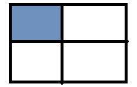
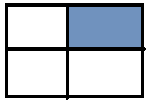
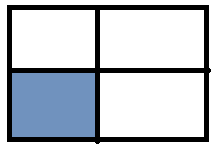
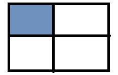
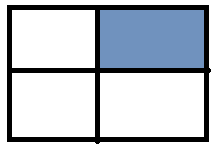
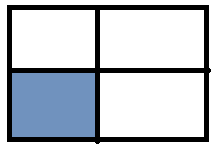

Знайти суми елементів у вказаній області
1) 
2) 
3) 
4)

5) Суму парних рядків
6) Суму непарних стовпців
7) У парних рядках – непарні стовпці, у непарних – парні.
Знайти суми елементів у вказаній області
1) 
2) 
3) 
4)
5) Суму парних рядків
6) Суму непарних стовпців
7) У парних рядках – непарні стовпці, у непарних – парні.
Дано інформацію про прибуток К магазинів протягом тижня. Знайти :
Морський бій. Випадковим чином на двовимірному полі розміром 6*6 розташовується 5 кораблів. Користувач стріляє вказуючи координати. Гра продовжується поки не потоплено усі кораблі або у користувача не закінчаться снаряди.